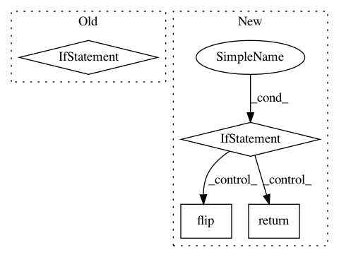

f937bbf05fed3d436cd07d159b451d448fe6eba2,tensorly/backend/mxnet_backend.py,MxnetBackend,sort,#Any#Any#Any#,293
Before Change
@staticmethod
def sort(tensor, axis, descending = False):
if descending:
is_ascend = False
else:
is_ascend = True
return mx.ndarray.sort(tensor, axis=axis, is_ascend = is_ascend)
for name in ["float64", "float32", "int64", "int32"]:
After Change
@staticmethod
def sort(tensor, axis, descending = False):
if descending:
return np.flip(np.sort(tensor, axis=axis), axis = axis)
else:
return np.sort(tensor, axis=axis)
for name in ["int64", "int32", "float64", "float32", "reshape", "moveaxis",
"where", "copy", "transpose", "arange", "ones", "zeros",
"zeros_like", "eye", "concatenate", "max", "min",
"all", "mean", "sum", "prod", "sign", "abs", "sqrt", "argmin",
In pattern: SUPERPATTERN
Frequency: 3
Non-data size: 4
Instances
Project Name: tensorly/tensorly
Commit Name: f937bbf05fed3d436cd07d159b451d448fe6eba2
Time: 2021-02-06
Author: ameyer@ucla.edu
File Name: tensorly/backend/mxnet_backend.py
Class Name: MxnetBackend
Method Name: sort
Project Name: mariogeiger/se3cnn
Commit Name: 6c06a88957549b1405f43361e4aa911abc56ef66
Time: 2018-10-04
Author: geiger.mario@gmail.com
File Name: se3cnn/kernel.py
Class Name:
Method Name: cube_basis_kernels
Project Name: analysiscenter/batchflow
Commit Name: 49f4e83ae4323e032bdd232e466e59b4aeceb458
Time: 2018-03-28
Author: g.ivanov@analysiscenter.ru
File Name: dataset/batch_image.py
Class Name: ImagesBatch
Method Name: _flip_